Références
Créer et gérer une table des matières, une table des illustrations, des notes, des citations, des sources et une bibliographie dans Microsoft Word.
Objectifs d’apprentissage
L’onglet Références regroupe les outils qui permettent d’organiser un document long et de documenter ses sources. Ces fonctions sont particulièrement utiles pour les rapports, travaux scolaires, mémoires, guides et documents professionnels.
- structurer un document avec les styles de titres ;
- insérer et personnaliser une table des matières automatique ;
- choisir le nombre de niveaux affichés et les caractères de suite ;
- mettre à jour une table après modification du document ;
- ajouter des légendes et produire une table des illustrations ;
- insérer des notes de bas de page ;
- créer, réutiliser et modifier des sources et citations ;
- générer une bibliographie.
1. Table des matières
Une table des matières présente les grandes parties du document et leurs numéros de page. Dans un document numérique, elle peut également faciliter la navigation vers les différentes sections.
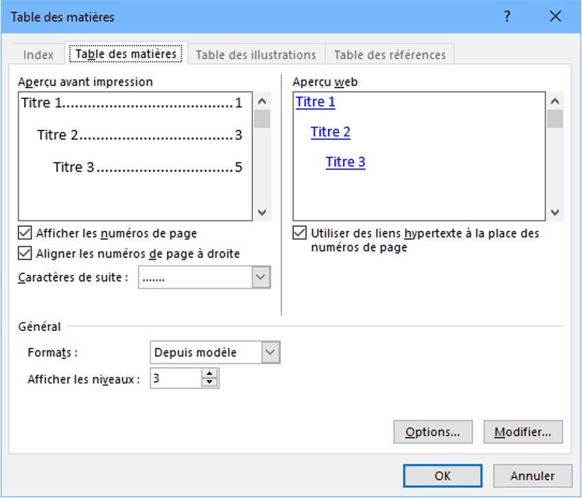
1.1 Préparer le document
Avant de créer la table, appliquez les styles de titre aux éléments qui doivent apparaître dans la hiérarchie :
| Style | Utilisation | Exemple |
|---|---|---|
| Titre 1 | Parties ou chapitres principaux | Chapitre 1 : Introduction |
| Titre 2 | Sous-parties | 1.1 Contexte |
| Titre 3 | Niveau inférieur | 1.1.1 Objectifs |
2. Créer et personnaliser la table des matières
2.1 Insérer une table automatique
- Placez le curseur à l’endroit où la table doit apparaître, généralement après la page de garde.
- Ouvrez l’onglet Références.
- Cliquez sur Table des matières.
- Choisissez une table automatique ou une table personnalisée.

2.2 Personnaliser l’affichage
La boîte de dialogue de personnalisation permet de contrôler l’apparence et le niveau de détail de la table.
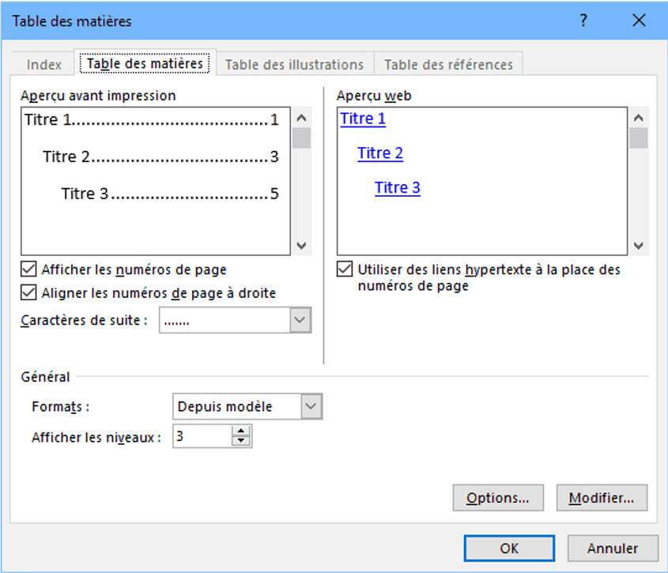
- Afficher les numéros de page : affiche ou masque la page associée à chaque titre.
- Aligner les numéros de page à droite : aligne les numéros sur le bord droit.
- Caractères de suite : ajoute par exemple des points entre le titre et le numéro.
- Afficher les niveaux : détermine la profondeur de la table.
- Utiliser des liens hypertexte : permet une navigation directe dans le document lorsque cette option est disponible.
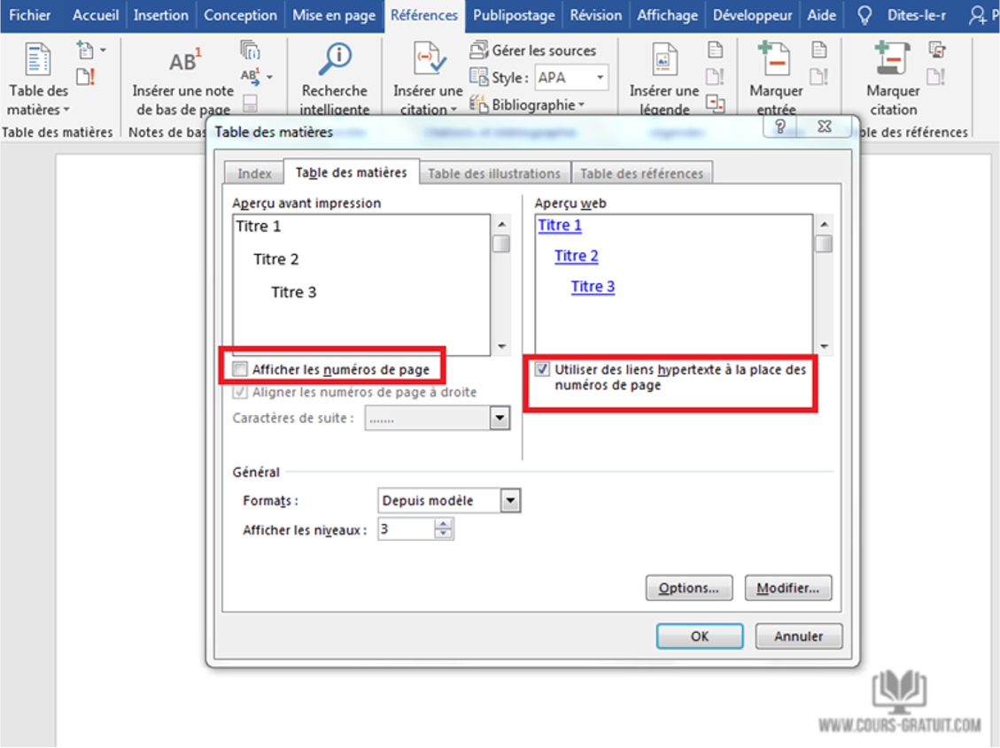
2.3 Associer les styles aux niveaux
Le bouton Options permet de préciser quels styles alimentent chaque niveau de la table.
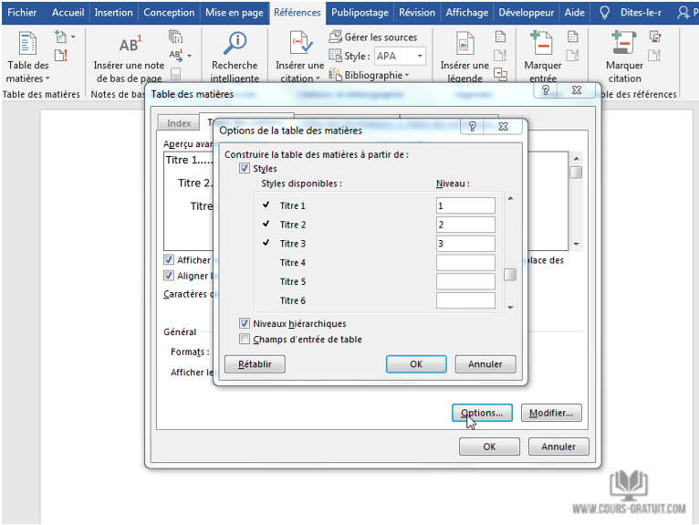
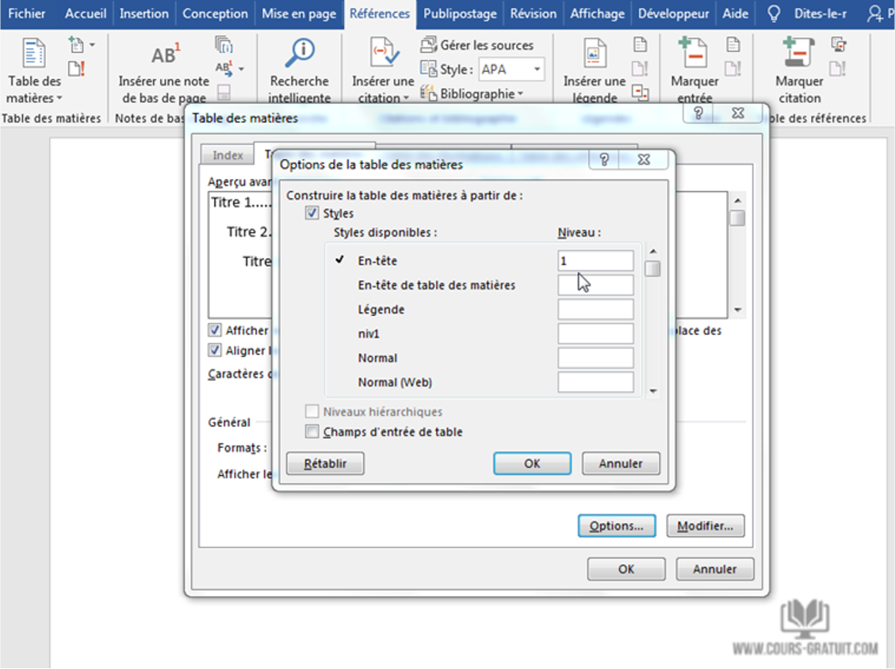
3. Mettre à jour la table des matières
Lorsque le texte, les titres ou la pagination changent, la table doit être mise à jour afin de refléter la nouvelle structure du document.
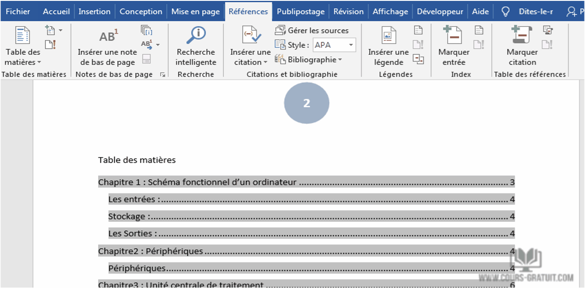
- Cliquez dans la table des matières.
- Choisissez la commande de mise à jour de la table.
- Si seuls les déplacements de pages ont changé, mettez à jour les numéros de page.
- Si des titres ont été ajoutés, supprimés ou modifiés, mettez à jour toute la table.
4. Table des illustrations
La table des illustrations répertorie automatiquement les figures, images, graphiques ou tableaux auxquels une légende Word a été associée. Voici la procédure complète, illustrée étape par étape.
3.1 Étape 1 — Sélectionner l’illustration
Cliquez sur l’image, le graphique ou l’objet auquel vous souhaitez attribuer une légende.
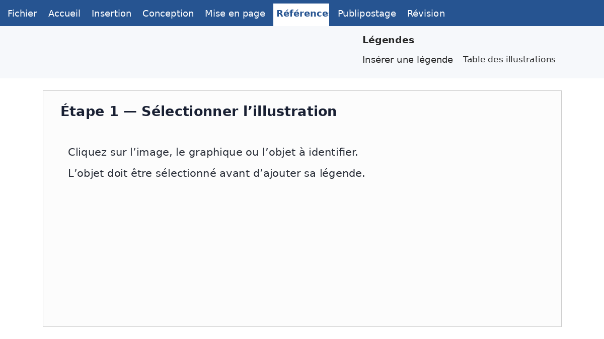
3.2 Étape 2 — Insérer une légende
Dans Références, groupe Légendes, cliquez sur Insérer une légende.
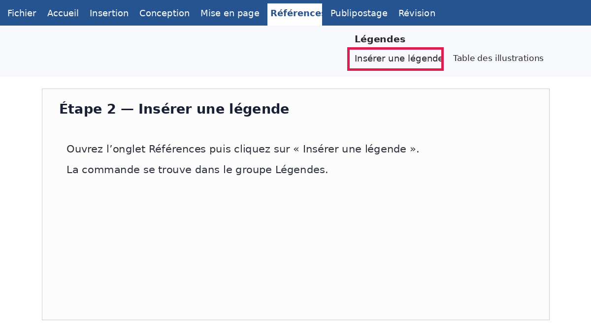
3.3 Étape 3 — Configurer la légende
Choisissez l’étiquette Figure, complétez le titre et sélectionnez la position. Word gère automatiquement le numéro.
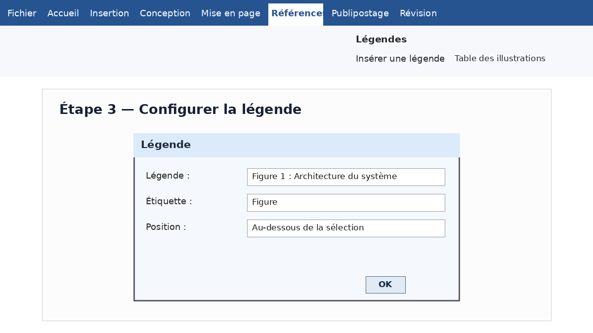
3.4 Étape 4 — Légender toutes les illustrations
Répétez l’opération pour chaque objet qui doit apparaître dans la table.
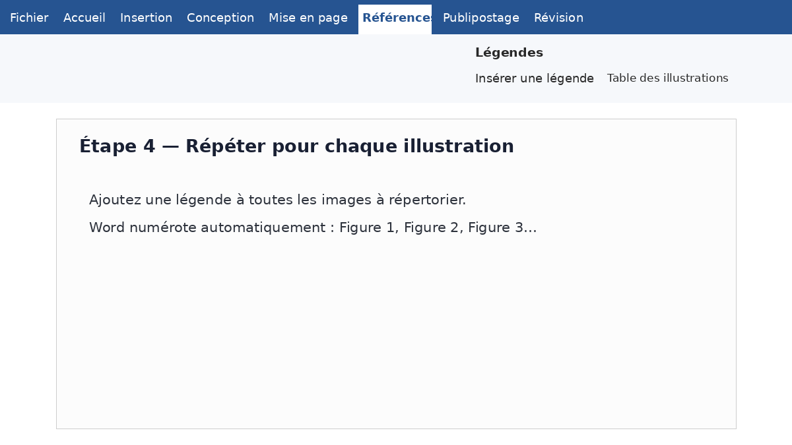
3.5 Étape 5 — Insérer la table des illustrations
Placez le curseur à l’endroit souhaité puis choisissez Références → Table des illustrations (le libellé peut être « Insérer une table des illustrations » selon la version).
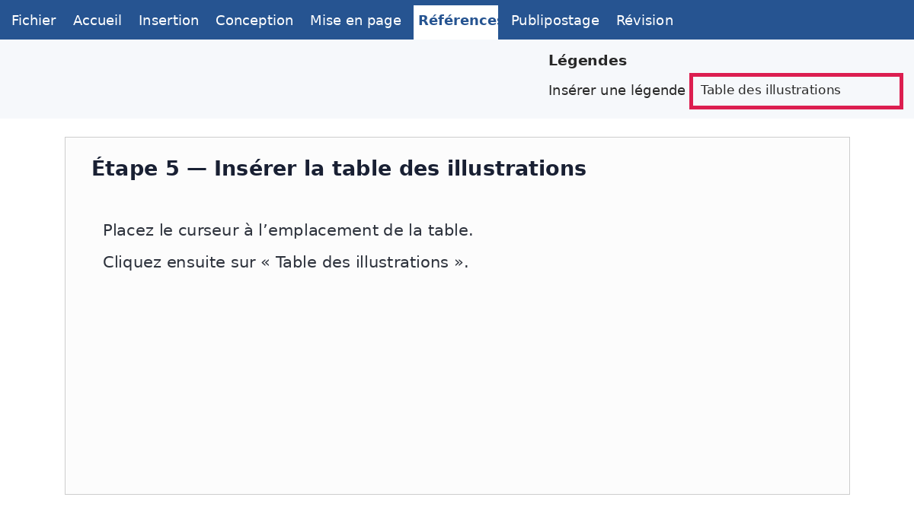
3.6 Étape 6 — Régler les options
Choisissez l’étiquette à répertorier, les numéros de page, leur alignement et les caractères de suite, puis validez.
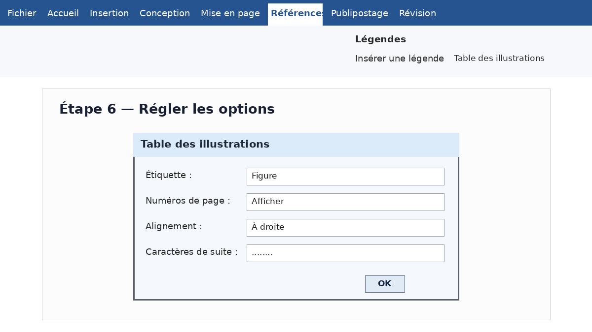
3.7 Étape 7 — Vérifier le résultat
Word génère automatiquement la liste à partir des légendes du document.
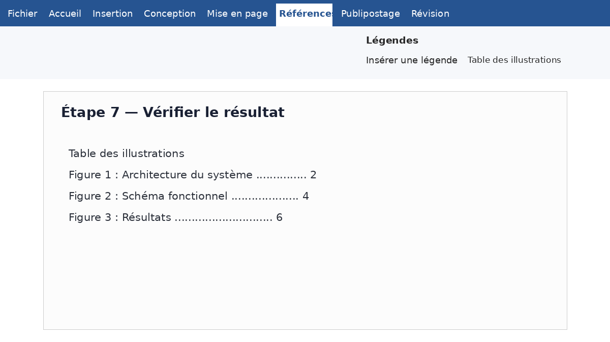
3.8 Étape 8 — Mettre la table à jour
Après l’ajout, la suppression ou le déplacement d’une figure, actualisez la table.
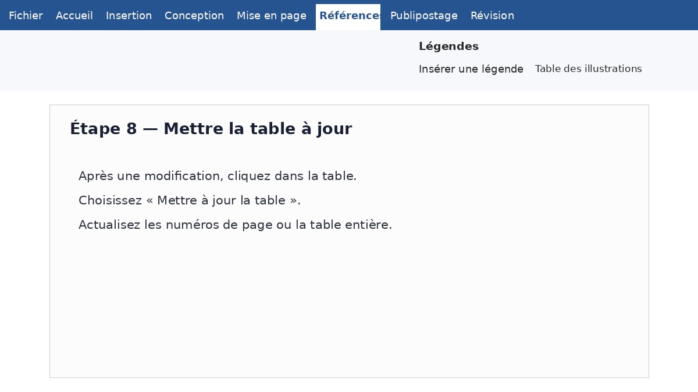
4.9 Exemple complet — Créer une table des graphiques
Word utilise le même mécanisme que pour une table des illustrations. Pour obtenir une table des graphiques, on attribue d’abord aux graphiques une légende portant l’étiquette personnalisée Graphique, puis on génère la table à partir de cette étiquette.
Étape 1 — Insérer l’image ou le graphique
Dans l’onglet Insertion, cliquez sur Images pour insérer le visuel dans le document.
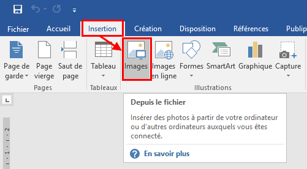
Étape 2 — Insérer une légende
Sélectionnez le graphique, puis utilisez la commande Insérer une légende. La capture montre également cette commande dans le menu contextuel du graphique.
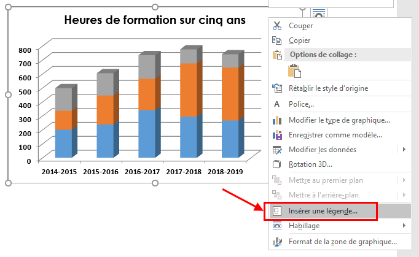
Étape 3 — Créer l’étiquette « Graphique »
Dans la boîte de dialogue Légende, cliquez sur Nouvelle étiquette…, saisissez Graphique, puis validez. Sélectionnez ensuite cette nouvelle étiquette dans la liste.
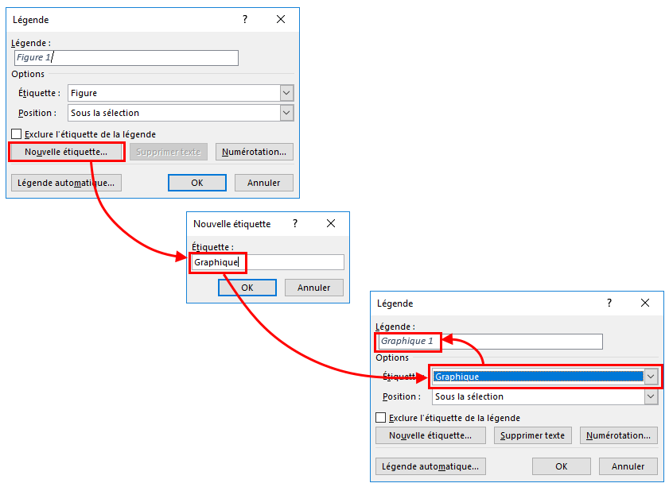
Étape 4 — Compléter la légende du graphique
Après le numéro généré par Word, ajoutez un titre descriptif. Exemple : Graphique 1 : heures de formation 2014-2019, puis cliquez sur OK.
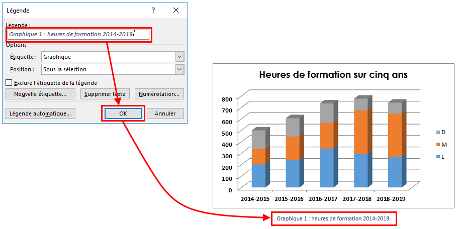
Étape 5 — Insérer la table des graphiques
Une fois tous les graphiques légendés, placez le curseur à l’endroit où la liste doit apparaître. Ouvrez Références, cliquez sur Insérer une table des illustrations, puis choisissez Graphique dans le champ Légende. Validez avec OK.
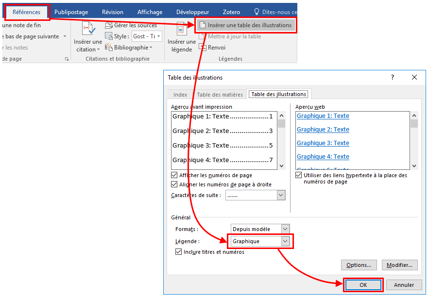
Étape 6 — Vérifier la table obtenue
Word rassemble alors automatiquement les légendes portant l’étiquette Graphique et affiche leurs numéros de page.
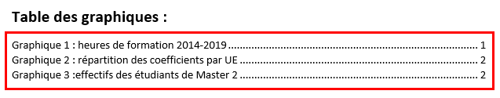
5. Notes de bas de page et notes de fin
Les notes de bas de page permettent d’ajouter une précision, une référence ou un commentaire sans alourdir le texte principal. Word insère un appel de note en exposant dans le texte et place automatiquement le contenu de la note au bas de la page. Les notes de fin suivent le même principe, mais sont regroupées à la fin du document ou de la section.
5.1 Insérer une note de bas de page
- Placez le curseur immédiatement après le mot, la phrase ou l’idée à documenter.
- Ouvrez l’onglet Références.
- Cliquez sur Insérer une note de bas de page.
- Word ajoute automatiquement un numéro en exposant et déplace le curseur dans la zone de note au bas de la page.
- Saisissez la référence ou l’explication souhaitée.
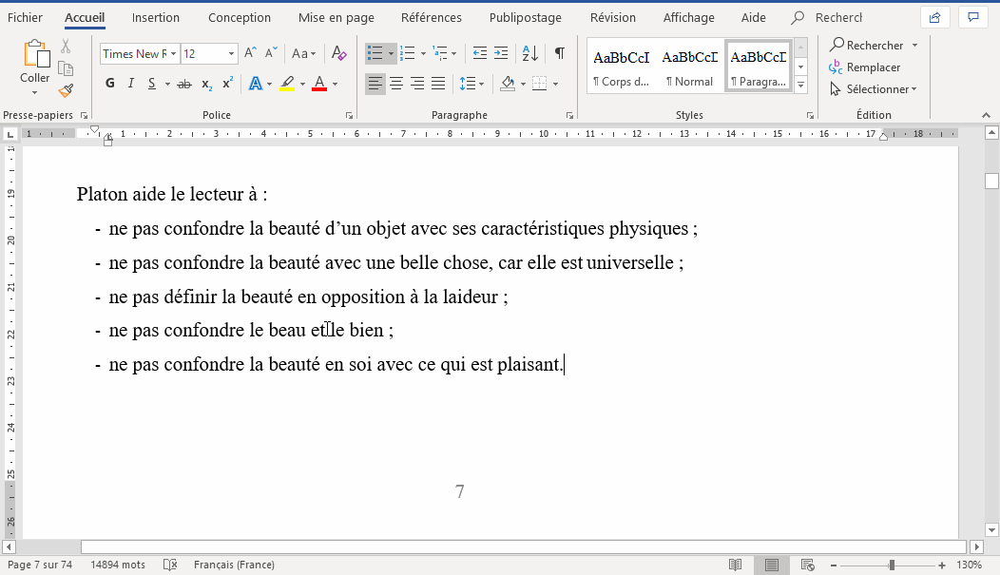
5.2 Insérer une note de fin
Une note de fin est utile lorsque l’on souhaite regrouper les notes plutôt que de les afficher au bas de chaque page.
- Placez le curseur après le passage concerné.
- Dans l’onglet Références, choisissez la commande d’insertion d’une note de fin.
- Word crée l’appel de note et vous conduit à l’emplacement réservé aux notes de fin.
- Saisissez le texte de la note.
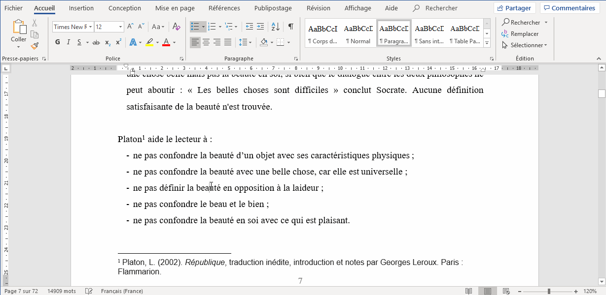
5.3 Personnaliser les notes
Word permet également d’adapter la présentation et l’organisation des notes. Utilisez les options du groupe Notes de bas de page pour accéder aux paramètres disponibles.
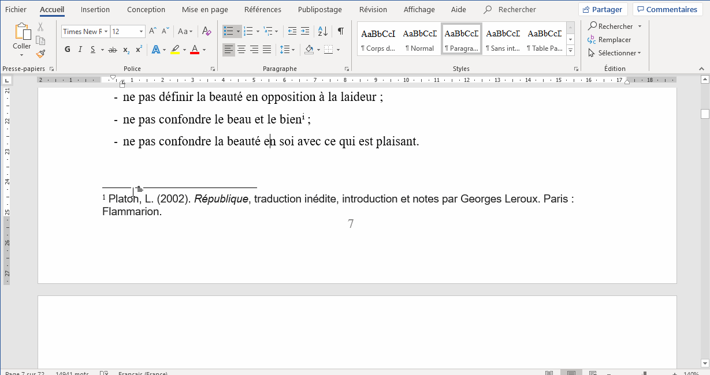
| Type | Emplacement | Utilisation |
|---|---|---|
| Note de bas de page | Au bas de la page concernée | Référence ou précision que le lecteur doit pouvoir consulter immédiatement. |
| Note de fin | Regroupée à la fin | Document comportant de nombreuses notes ou présentation plus épurée. |
6. Citations et sources
Word permet d’enregistrer les informations d’une source, d’insérer des citations dans le texte et de réutiliser ensuite ces données pour générer automatiquement une bibliographie. La procédure commence par le choix du style bibliographique.
6.1 Étape 1 — Choisir le style bibliographique
Ouvrez l’onglet Références. Dans le groupe Citations et bibliographie, ouvrez la liste Style puis choisissez le style demandé, par exemple APA. La liste peut aussi proposer d’autres styles selon la version de Word.
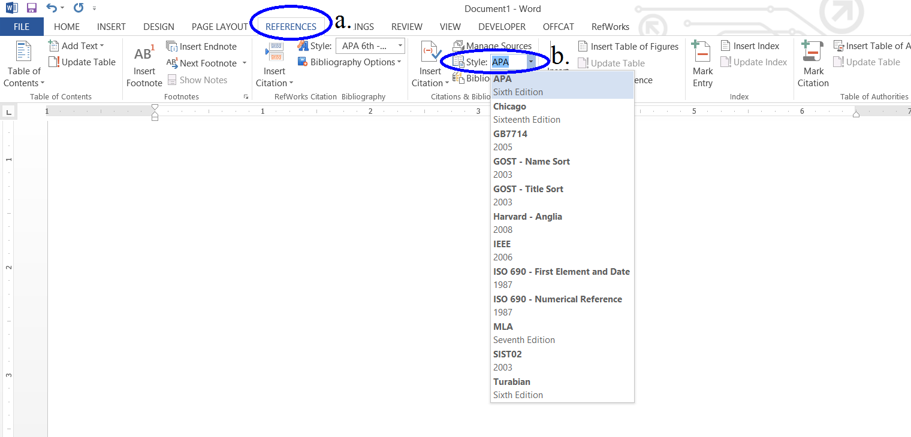
6.2 Étape 2 — Ouvrir « Insérer une citation »
Placez le curseur à l’endroit du texte où la référence doit être insérée, puis cliquez sur Insérer une citation.
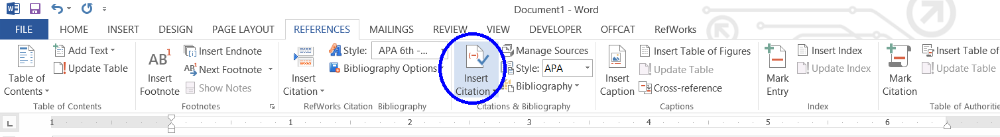
6.3 Étape 3 — Ajouter une nouvelle source
Dans le menu qui s’ouvre, choisissez Ajouter une nouvelle source…. Word ouvrira la boîte de dialogue permettant d’enregistrer les informations bibliographiques.
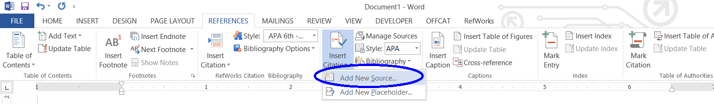
6.4 Étape 4 — Choisir le type de source
Dans Type de source, indiquez la nature du document : livre, section de livre, article de revue, article de périodique, actes de conférence, rapport, etc. Les champs affichés s’adaptent au type choisi.
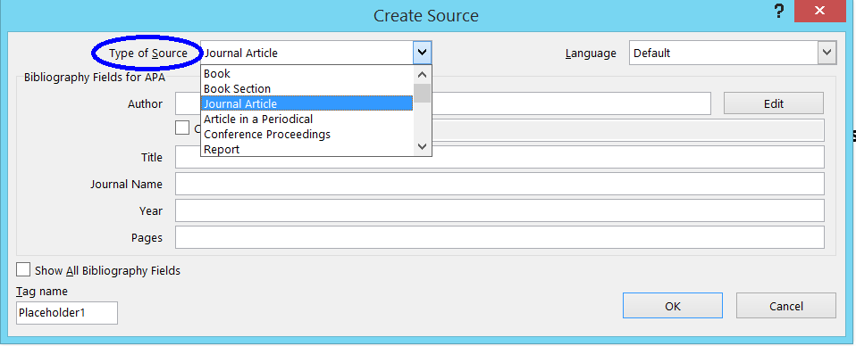
6.5 Étape 5 — Renseigner les informations bibliographiques
Complétez les champs proposés par Word. Pour un livre, la capture montre notamment Auteur, Titre, Année, Ville et Éditeur. Cliquez ensuite sur OK.
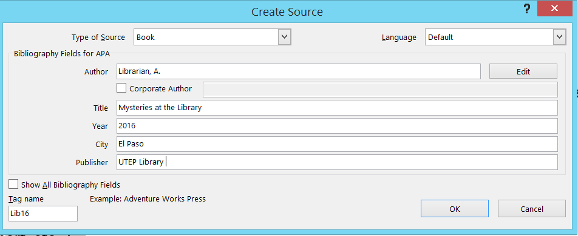
6.6 Réutiliser une source
Après son enregistrement, la source peut être réutilisée depuis Insérer une citation sans ressaisir toutes ses informations. Les outils de gestion des sources permettent également de corriger ou compléter les références enregistrées.
7. Bibliographie
Une fois les sources enregistrées et les citations insérées, Word peut générer automatiquement la liste des références utilisées dans le document.
7.1 Étape 1 — Choisir l’emplacement
Placez le curseur à l’endroit où la bibliographie doit apparaître, généralement à la fin du document, puis ouvrez l’onglet Références.
7.2 Étape 2 — Ouvrir le menu Bibliographie
Cliquez sur Bibliographie. Word affiche une galerie proposant différents intitulés et présentations, notamment Bibliography, References ou Works Cited dans la version illustrée.
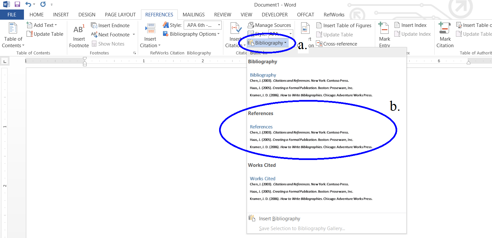
7.3 Étape 3 — Vérifier le résultat
Word insère la liste automatiquement à partir des sources enregistrées. Vérifiez le titre de la section, la présence des références attendues et la cohérence avec le style bibliographique sélectionné.
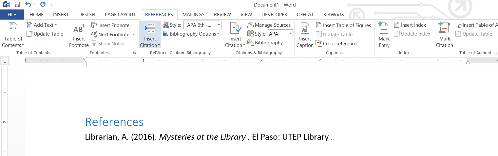
| Élément | Fonction |
|---|---|
| Style | Détermine la présentation bibliographique appliquée par Word. |
| Source | Contient les informations enregistrées sur le document cité. |
| Citation | Insère dans le texte un renvoi vers une source. |
| Bibliographie | Produit la liste des références à partir des sources enregistrées. |
8. TP pratique — Références dans Microsoft Word
Dans ce TP, vous ne devez pas créer le contenu du document à partir de zéro. Un document Word brut est fourni. Votre travail consiste à télécharger ce document puis à appliquer les fonctionnalités étudiées dans le cours : styles de titres, table des matières, légendes, tables des illustrations et des graphiques, notes, citations et bibliographie.
Document de départ à télécharger
Téléchargez le fichier ci-dessous et travaillez directement dans cette copie. Le document contient déjà le texte, les sections, les données nécessaires aux graphiques, les informations des sources bibliographiques et les passages à utiliser pendant le TP.
Télécharger le document brut du TP (.docx)Exercice 1 — Structurer les titres du document
Objectif : préparer la structure nécessaire à la table des matières.
- Repérez les titres principaux déjà présents : Introduction, Technologies utilisées, Enjeux et limites, Données pour les graphiques, Sources à saisir dans Word, Passages à utiliser pour les citations, Textes pouvant recevoir des notes et Conclusion.
- Appliquez le style Titre 1 aux titres principaux pertinents du document.
- Repérez les sous-sections, notamment Intelligence artificielle, Plateformes d’apprentissage et Outils collaboratifs.
- Appliquez le style Titre 2 aux sous-sections.
- Vérifiez visuellement la hiérarchie des titres dans tout le document.
Question : pourquoi un titre simplement mis en gras n’est-il pas équivalent à un paragraphe auquel le style « Titre 1 » a été appliqué ?
Exercice 2 — Créer la table des matières
Objectif : générer automatiquement la structure du document.
- Insérez une nouvelle page après la page de présentation.
- Placez le curseur sur cette page.
- Choisissez Références → Table des matières.
- Insérez une table des matières automatique.
- Vérifiez que les titres de niveau 1 et 2 apparaissent correctement avec leurs numéros de page.
- Modifiez ensuite un titre ou ajoutez un nouveau sous-titre dans le document.
- Revenez à la table des matières et choisissez Mettre à jour toute la table.
Exercice 3 — Insérer et légender des illustrations
Objectif : utiliser les légendes automatiques de Word. Les images ne sont pas imposées dans le document brut : choisissez trois images pertinentes en lien avec le thème du document et insérez-les aux endroits appropriés.
- Insérez au moins trois images dans les sections sur les technologies numériques.
- Sélectionnez la première image puis choisissez Références → Insérer une légende.
- Utilisez l’étiquette Figure.
- Ajoutez un titre descriptif après le numéro créé automatiquement par Word.
- Répétez l’opération pour les autres images.
- Vérifiez que Word produit automatiquement Figure 1, Figure 2, Figure 3.
Exercice 4 — Créer la table des illustrations
- Insérez une nouvelle page après la table des matières ou à l’emplacement indiqué par l’enseignante.
- Ajoutez le titre Table des illustrations.
- Choisissez Références → Insérer une table des illustrations.
- Sélectionnez l’étiquette Figure.
- Affichez les numéros de page et conservez les caractères de suite.
- Validez et vérifiez que vos trois figures apparaissent.
Exercice 5 — Créer deux graphiques à partir des données fournies
Objectif : exploiter les deux tableaux déjà présents dans la section Données pour les graphiques.
- Utilisez les données du tableau Utilisation hebdomadaire des outils numériques pour créer un premier graphique.
- Utilisez les données du tableau Répartition des outils utilisés par les étudiants pour créer un deuxième graphique.
- Choisissez un type de graphique adapté à chaque série de données.
- Ajoutez un titre clair à chaque graphique.
Exercice 6 — Légender les graphiques et créer la table des graphiques
- Sélectionnez le premier graphique et ouvrez Insérer une légende.
- Cliquez sur Nouvelle étiquette… et créez l’étiquette Graphique.
- Ajoutez un titre descriptif après Graphique 1.
- Appliquez la même étiquette au deuxième graphique.
- Ajoutez une page intitulée Table des graphiques.
- Choisissez Références → Insérer une table des illustrations, puis sélectionnez l’étiquette Graphique.
- Validez et vérifiez que les deux graphiques apparaissent dans la liste.
Exercice 7 — Insérer des notes de bas de page et une note de fin
Utilisez la section Textes pouvant recevoir des notes du document brut. Elle contient les notions Apprentissage hybride, Collaboration synchrone et Littératie numérique.
- Choisissez deux de ces notions et repérez dans le document un emplacement pertinent pour les utiliser.
- Insérez une note de bas de page pour la première notion et placez sa définition dans la note.
- Insérez une deuxième note de bas de page pour une autre notion.
- Insérez ensuite une note de fin pour la troisième notion.
- Comparez l’emplacement d’une note de bas de page avec celui d’une note de fin.
Exercice 8 — Enregistrer les sources bibliographiques
Objectif : utiliser les informations déjà fournies dans la section Sources à saisir dans Word.
- Dans Références, choisissez le style APA.
- Choisissez Insérer une citation → Ajouter une nouvelle source.
- Créez la source Martin, Claire — Technologies numériques et apprentissage comme source de type Livre, en utilisant les informations fournies.
- Créez la source Bernard, Julien — Usages pédagogiques de l’intelligence artificielle comme Article de revue.
- Ajoutez également la source de Lefebvre, Nadia comme livre.
- Vérifiez les auteurs, titres, années et autres champs avant de valider.
Question : pourquoi les champs proposés par Word changent-ils lorsque vous passez de « Livre » à « Article de revue » ?
Exercice 9 — Insérer les citations dans le texte
Utilisez les trois textes de la section Passages à utiliser pour les citations comme matériel de travail.
- Associez le passage sur les outils numériques à une source pertinente enregistrée dans Word.
- Associez le passage sur l’intelligence artificielle à la source de Bernard.
- Associez le passage sur les environnements collaboratifs à la source de Lefebvre.
- Placez ces passages dans des sections pertinentes du document si nécessaire.
- À la fin de chaque passage, utilisez Insérer une citation pour ajouter la source correspondante.
- Vérifiez la présentation des citations avec le style APA.
Exercice 10 — Générer la bibliographie
- Placez le curseur à la fin du document.
- Insérez une nouvelle page.
- Choisissez Références → Bibliographie.
- Insérez une liste de références automatique.
- Vérifiez que les sources citées apparaissent dans la bibliographie.
- Si une information est incorrecte, corrigez la source dans Word plutôt que de modifier uniquement le texte affiché dans la bibliographie.
Exercice 11 — Mise à jour générale
Objectif : vérifier que les éléments automatiques restent cohérents après des modifications.
- Ajoutez une nouvelle sous-section avec le style Titre 2.
- Ajoutez une quatrième figure avec une légende automatique.
- Modifiez l’emplacement d’un graphique afin qu’il change de page.
- Mettez à jour la table des matières.
- Mettez à jour la table des illustrations.
- Mettez à jour la table des graphiques.
- Vérifiez la numérotation des figures, graphiques et notes.
Exercice 12 — Vérification et remise
Avant de remettre votre travail, assurez-vous que le document final contient :
- une hiérarchie correcte avec les styles Titre 1 et Titre 2 ;
- une table des matières automatique et à jour ;
- au moins 4 figures avec des légendes automatiques ;
- une table des illustrations ;
- 2 graphiques créés à partir des données fournies ;
- une table des graphiques ;
- 2 notes de bas de page et 1 note de fin ;
- 3 sources enregistrées dans Word ;
- au moins 3 citations dans le texte ;
- une bibliographie automatique.
Grille d’auto-vérification
| Critère | Vérification |
|---|---|
| Les styles Titre 1 et Titre 2 sont correctement appliqués. | □ Oui □ À corriger |
| La table des matières est automatique et à jour. | □ Oui □ À corriger |
| Les figures utilisent des légendes automatiques. | □ Oui □ À corriger |
| La table des illustrations est correcte. | □ Oui □ À corriger |
| Les graphiques ont été créés à partir des données fournies. | □ Oui □ À corriger |
| Les graphiques utilisent l’étiquette « Graphique ». | □ Oui □ À corriger |
| La table des graphiques est présente et à jour. | □ Oui □ À corriger |
| Les notes ont été insérées avec les fonctions de Word. | □ Oui □ À corriger |
| Les trois sources sont correctement enregistrées. | □ Oui □ À corriger |
| Les citations sont insérées avec Word. | □ Oui □ À corriger |
| La bibliographie est générée automatiquement. | □ Oui □ À corriger |
Synthèse
| Besoin | Commande principale |
|---|---|
| Présenter la structure du document | Références → Table des matières |
| Répertorier les figures/tableaux | Insérer une légende → Table des illustrations |
| Ajouter une précision | Insérer une note de bas de page |
| Citer une source | Insérer une citation |
| Créer la liste des références | Bibliographie |
| Actualiser la structure | Mettre à jour la table |